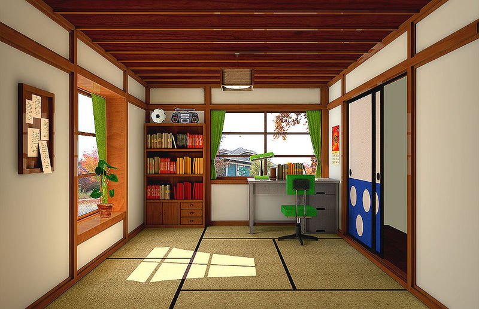

穿越時空的藍色小叮噹 · 台灣與世界的哆啦A夢故事

收錄哆啦A夢（小叮噹）的各種珍貴資訊——從創作歷史、台灣的特殊出版文化，到全世界的博物館與每一位深愛的角色。
從1969年誕生至今，跨越半世紀的大小時間點與重要里程碑。
那些在麵店旁邊吵著要買的一本10元小叮噹——台灣獨特的出版文化。
哆啦A夢博物館、紀念館、收藏館——世界各地的哆啦A夢聖地。
認識哆啦A夢、大雄、靜香、胖虎、小夫⋯⋯以及背後的傳奇創作者。
任意門、竹蜻蜓、記憶麵包——18 件最具代表性秘密道具完整介紹。
從 1986 年 Famicom 到 2022 年 Switch，哆啦A夢四十年電玩歷史。
1980 年至今共 43 部大銀幕冒險，每年三月的感動約定，附完整劇情介紹。
大長篇電影版、ザ・ドラえもんズ，以及棒球、算數、理科等 100+ 冊學習漫畫。